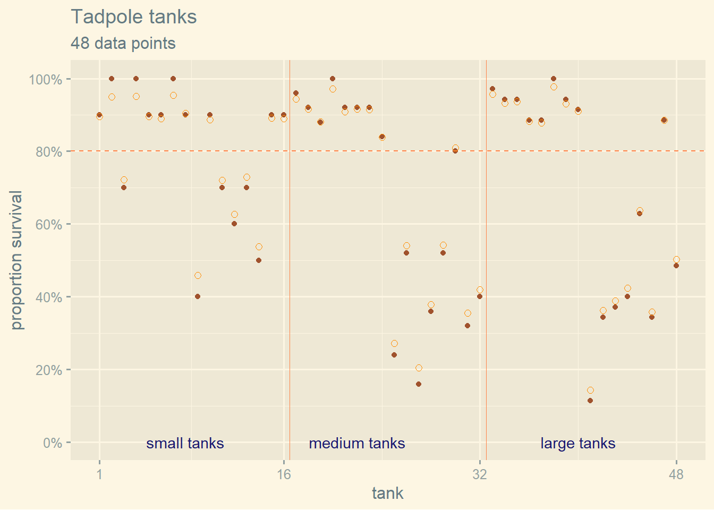
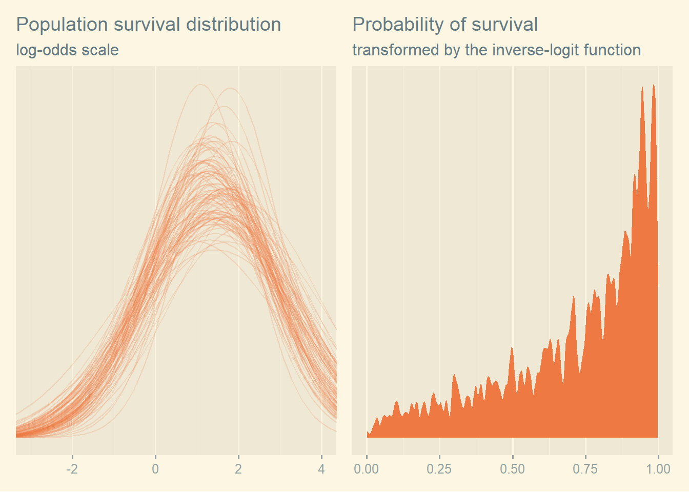

# For execution on a local, multicore CPU with excess RAM
options(mc.cores = parallel::detectCores())
# To avoid recompilation of unchanged Stan programs
rstan_options(auto_write = TRUE)13 Multilevel Models
Some options to facilitate the computations
The default theme used by ggplot2
theme_set(ggthemes::theme_solarized_2())
# theme_set(
# ggthemes::theme_solarized_2(light = TRUE) +
# theme(strip.background = element_rect(fill = "darkgrey"))
# )13.1 Example: Multilevel tadpoles
data(reedfrogs)
dataFrogs <- reedfrogs |>
mutate(tank = seq_len(n()),
tank = factor(tank))
rm(reedfrogs)
dataFrogs |>
skim() |>
select(-n_missing, -complete_rate) |>
mutate(across(.cols = where(is.numeric), .fns = round, digits = 2))| Name | dataFrogs |
| Number of rows | 48 |
| Number of columns | 6 |
| _______________________ | |
| Column type frequency: | |
| factor | 3 |
| numeric | 3 |
| ________________________ | |
| Group variables | None |
Variable type: factor
| skim_variable | ordered | n_unique | top_counts |
|---|---|---|---|
| pred | FALSE | 2 | no: 24, pre: 24 |
| size | FALSE | 2 | big: 24, sma: 24 |
| tank | FALSE | 48 | 1: 1, 2: 1, 3: 1, 4: 1 |
Variable type: numeric
| skim_variable | mean | sd | p0 | p25 | p50 | p75 | p100 | hist |
|---|---|---|---|---|---|---|---|---|
| density | 23.33 | 10.38 | 10.00 | 10.0 | 25.00 | 35.00 | 35 | ▇▁▇▁▇ |
| surv | 16.31 | 9.88 | 4.00 | 9.0 | 12.50 | 23.00 | 35 | ▇▂▂▂▃ |
| propsurv | 0.72 | 0.27 | 0.11 | 0.5 | 0.89 | 0.92 | 1 | ▁▂▂▁▇ |
with the plot of data
plotFrogs <- ggplot(dataFrogs, aes(x = as.integer(tank), y = propsurv)) +
geom_point(color = "sienna") +
geom_hline(yintercept = 0.8, color = "sienna1", linetype = "dashed") +
geom_vline(xintercept = c(16.5, 32.5), size = 1/3, color = "sienna1") +
scale_x_continuous(breaks = c(1, 16, 32, 48)) +
scale_y_continuous(breaks = scales::breaks_width(width = 0.2),
labels = scales::label_percent(accuracy = 1)) +
annotate(geom = "text",
x = c(8, 16 + 6, 32 + 8), y = 0,
label = c("small tanks", "medium tanks", "large tanks"),
color = "midnightblue") +
theme(axis.text.x = element_text(size = rel(1))) +
labs(title = "Tadpole tanks",
subtitle = sprintf("%d data points", nrow(dataFrogs)),
x = "tank", y = "proportion survival")Warning: Using `size` aesthetic for lines was deprecated in ggplot2 3.4.0.
ℹ Please use `linewidth` instead.plotFrogs13.1.1 Simple
and the model, without multilevel effect, is
\[ \begin{align*} surv_i &\sim \mathcal{Binomial}(n_i, p_i) \\ logit(p_i) &= \alpha_{tank[i]} \\ \alpha_{tank} &\sim \mathcal{N}(0, 1.5) \end{align*} \]
This fit gives the closest waic to the one shown in R code 13.4 on p. 404.
tictoc::tic(msg = sprintf("run time of %s, use the cache.", "70 secs."))
fit13_01 <- xfun::cache_rds({
out <- brm(
data = dataFrogs,
family = binomial,
formula = bf(surv | trials(density) ~ 0 + tank),
prior = c(
prior(normal(0, 1.5), class = b)),
iter = 1000, warmup = 500, chains = 2,
cores = detectCores(), seed = 1301)
add_criterion(out, c("loo", "waic"))},
file = "ch13_fit13_01", rerun = FALSE)
tictoc::toc()run time of 70 secs., use the cache.: 0.13 sec elapsedfit13_01 |>
spread_draws(`b_.+`, regex = TRUE) |>
summarize_draws("mean", "sd", ~quantile(.x, probs = c(0.055, 0.945)),
default_convergence_measures()) |>
mutate(across(.cols = where(is.numeric), .fns = round, digits = 2),
across(.cols = starts_with("ess"), .fns = as.integer))# A tibble: 48 × 8
variable mean sd `5.5%` `94.5%` rhat ess_bulk ess_tail
<chr> <dbl> <dbl> <dbl> <dbl> <dbl> <int> <int>
1 b_tank1 1.73 0.77 0.53 3.09 1 1512 824
2 b_tank2 2.38 0.93 1 4.01 1 1403 657
3 b_tank3 0.74 0.63 -0.24 1.78 1.01 991 716
4 b_tank4 2.44 0.91 1.08 3.98 1 875 683
5 b_tank5 1.69 0.79 0.55 2.99 1 1636 731
6 b_tank6 1.71 0.77 0.54 2.95 1.01 1484 675
7 b_tank7 2.4 0.9 1.08 3.97 1 1230 742
8 b_tank8 1.71 0.78 0.56 3.04 1 1254 718
9 b_tank9 -0.36 0.63 -1.39 0.61 1 1310 610
10 b_tank10 1.73 0.76 0.57 2.97 1.01 1222 761
# … with 38 more rowsand visualize the intercepts which correspond to the logit of the probabilities.
plot13_01 <- list()
plot13_01 <- within(plot13_01, {
data <- fit13_01 |>
summarize_draws() |>
filter(variable != "lp__") |>
select(variable, a = mean) |>
mutate(p = inv_logit_scaled(a)) |>
rename(exp_surv_log_odds = a, exp_surv_prob = p) |>
pivot_longer(cols = c(exp_surv_log_odds, exp_surv_prob))
p <- ggplot(data, aes(x = value, fill = name, color = name)) +
geom_dotplot() +
scale_fill_manual(values = c("orange1", "orange4")) +
scale_color_manual(values = c("orange1", "orange4")) +
scale_y_continuous(breaks = NULL) +
theme(legend.position = "none") +
facet_wrap(. ~ name, scales = "free_x") +
labs(title = "Tank-level intercepts from the no-pooling model",
x = NULL, y = NULL)
})
plot13_01$pBin width defaults to 1/30 of the range of the data. Pick better value with
`binwidth`.13.1.2 Multilevel
and now the multilevel model
\[ \begin{align*} surv_i &\sim \mathcal{Binomial}(n_i, p_i) \\ logit(p_i) &= \alpha_{tank[i]} \\ \alpha_j &\sim \mathcal{N}(\bar{\alpha}, \sigma) \\ \bar{\alpha} &\sim \mathcal{N}(0, 1.5) \\ \sigma &\sim \mathcal{Exponential}(1) \end{align*} \]
and the fit is as follows. Note the prior prior(exponential(0, 1), class = sd) which is parametrized in the standard deviation metric (Kurtz). It is common for multilevel software to model the variance metric. This will be further explained in chapter 14.
This fit gives the closest waic to the one shown in R code 13.4 on p. 404.
tictoc::tic(msg = sprintf("run time of %s, use the cache.", "60 secs."))
fit13_02 <- xfun::cache_rds({
out <- brm(
data = dataFrogs,
family = binomial,
formula = bf(surv | trials(density) ~ 1 + (1 | tank)),
prior = c(
prior(normal(0, 1.5), class = Intercept),
prior(exponential(1), class = sd)),
sample_prior = TRUE,
iter = 1000, warmup = 500, chains = 2,
cores = detectCores(), seed = 1303)
add_criterion(out, c("loo", "waic"))},
file = "ch13_fit13_02", rerun = FALSE)
tictoc::toc()run time of 60 secs., use the cache.: 0.14 sec elapsedfit13_02 |>
spread_draws(`b_.+`, `sd_.+`,`r_.+`, regex = TRUE) |>
summarize_draws("mean", "sd", ~quantile(.x, probs = c(0.055, 0.945)),
default_convergence_measures()) |>
mutate(across(.cols = where(is.numeric), .fns = round, digits = 2),
across(.cols = starts_with("ess"), .fns = as.integer))# A tibble: 50 × 8
variable mean sd `5.5%` `94.5%` rhat ess_bulk ess_tail
<chr> <dbl> <dbl> <dbl> <dbl> <dbl> <int> <int>
1 b_Intercept 1.38 0.27 0.96 1.82 1 179 371
2 sd_tank__Intercept 1.64 0.21 1.35 2.03 1 374 540
3 r_tank[1,Intercept] 0.76 0.9 -0.59 2.32 1 1211 461
4 r_tank[2,Intercept] 1.73 1.15 0.05 3.71 1 1557 550
5 r_tank[3,Intercept] -0.39 0.7 -1.46 0.76 1.01 1047 649
6 r_tank[4,Intercept] 1.74 1.15 0.12 3.84 1 1675 834
7 r_tank[5,Intercept] 0.79 0.9 -0.55 2.33 1 1033 660
8 r_tank[6,Intercept] 0.76 0.92 -0.66 2.28 1 1242 624
9 r_tank[7,Intercept] 1.74 1.15 0.11 3.79 1 935 663
10 r_tank[8,Intercept] 0.8 0.92 -0.49 2.26 1 1335 513
# … with 40 more rows13.1.3 Comparison
and compare the models
print(loo_compare(fit13_01, fit13_02, criterion = "waic"), simplify = FALSE) elpd_diff se_diff elpd_waic se_elpd_waic p_waic se_p_waic waic
fit13_02 0.0 0.0 -99.7 3.8 20.6 1.0 199.3
fit13_01 -8.1 2.2 -107.7 2.2 26.0 1.4 215.5
se_waic
fit13_02 7.5
fit13_01 4.4 model_weights(fit13_01, fit13_02, weights = "waic") |>
round(digits = 2)fit13_01 fit13_02
0 1 13.1.4 Posterior distribution
fit13_02 Family: binomial
Links: mu = logit
Formula: surv | trials(density) ~ 1 + (1 | tank)
Data: dataFrogs (Number of observations: 48)
Draws: 2 chains, each with iter = 1000; warmup = 500; thin = 1;
total post-warmup draws = 1000
Group-Level Effects:
~tank (Number of levels: 48)
Estimate Est.Error l-95% CI u-95% CI Rhat Bulk_ESS Tail_ESS
sd(Intercept) 1.64 0.21 1.28 2.13 1.00 375 540
Population-Level Effects:
Estimate Est.Error l-95% CI u-95% CI Rhat Bulk_ESS Tail_ESS
Intercept 1.38 0.27 0.87 1.94 1.00 179 372
Draws were sampled using sampling(NUTS). For each parameter, Bulk_ESS
and Tail_ESS are effective sample size measures, and Rhat is the potential
scale reduction factor on split chains (at convergence, Rhat = 1).This time we don’t have a list of intercepts as in fit13_02. We have a description of their distribution \(\alpha_j \sim \mathcal{N}(\bar{\alpha}, \sigma)\) where \(Intercept = \bar{\alpha}\) and \(sd(Intercept) = \sigma\).
The task of getting the posterior is easier with tidybayes and posterior than the way McElreath and Kurtz do it.
# IMPORTANT: We use the median value, not the mean because of skewed
# binomial dist. You don't always have to use the mean!
epred13_02 <- dataFrogs |>
add_epred_draws(fit13_02, ndraws = 500) |>
mutate(propsurv.epred = .epred / density) |>
median_qi(.width = 0.89)
epred13_02# A tibble: 48 × 16
# Groups: density, pred, size, surv, propsurv, tank [48]
density pred size surv propsurv tank .row .epred .epre…¹ .epre…² props…³
<int> <fct> <fct> <int> <dbl> <fct> <int> <dbl> <dbl> <dbl> <dbl>
1 10 no big 7 0.7 3 3 7.21 4.60 8.95 0.721
2 10 no big 9 0.9 1 1 8.85 7.02 9.75 0.885
3 10 no big 10 1 2 2 9.50 7.92 9.94 0.950
4 10 no big 10 1 4 4 9.49 8.15 9.93 0.949
5 10 no small 9 0.9 5 5 8.91 7.15 9.73 0.891
6 10 no small 9 0.9 6 6 8.89 6.92 9.76 0.889
7 10 no small 9 0.9 8 8 8.96 6.99 9.76 0.896
8 10 no small 10 1 7 7 9.54 8.39 9.95 0.954
9 10 pred big 4 0.4 9 9 4.56 2.37 6.72 0.456
10 10 pred big 6 0.6 12 12 6.38 3.90 8.33 0.638
# … with 38 more rows, 5 more variables: propsurv.epred.lower <dbl>,
# propsurv.epred.upper <dbl>, .width <dbl>, .point <chr>, .interval <chr>,
# and abbreviated variable names ¹.epred.lower, ².epred.upper,
# ³propsurv.epredplotFrogs +
geom_point(epred13_02, mapping = aes(x = as.integer(tank), y = propsurv.epred),
inherit.aes = FALSE, shape = 1, size = 2, color = "darkorange")
First, we take a sampling of size 100 of the 4000 draws from the posterior sample with slice_sample(n = 100).
Second, to simulate the distribution of the logodds values described by the b_Intercept and tank_Intercepts of each draw we create a sequence of 100 logodds values between -4 and 5 (based on the acutal range of -2, 3.5 shown just above) which is done by expand(nesting(iter, b_Intercept, sd_tank__Intercept), x = seq(from = -4, to = 5, length.out = 100)) and which will result in 10000 lines.
Third, we compute the normal density for each of the 10000 lines using the b_Intercept and tank_Intercepts of each line. The normal density is used because the model is \(\alpha_{tank} \sim \mathcal{N}(0, 5)\) and \(\alpha \sim \mathcal{N}(0, 1)\). This is done with
samples <- list()
samples <- within(samples, {
data1 <- as_draws_df(fit13_02) |>
slice_sample(n = 100) |>
expand(nesting(.draw, b_Intercept, sd_tank__Intercept),
x = seq(from = -4, to = 5, length.out = 100)) |>
mutate(density = dnorm(x, mean = b_Intercept, sd = sd_tank__Intercept))
data2 <- as_draws_df(fit13_02) |>
slice_sample(n = 1000, replace = TRUE) |>
mutate(p_logit = rnorm(n(), mean = b_Intercept, sd = sd_tank__Intercept),
p = gtools::inv.logit(p_logit))
p1 <- ggplot(data1, aes(x = x, y = density, group = .draw)) +
geom_line(alpha = .2, color = "sienna2") +
scale_y_continuous(NULL, breaks = NULL) +
coord_cartesian(xlim = c(-3, 4)) +
labs(title = "Population survival distribution",
subtitle = "log-odds scale", x = NULL, y = NULL)
p2 <- ggplot(data2, aes(x = p)) +
geom_density(size = 0, fill = "sienna2", color = "sienna2", adjust = 0.1) +
scale_y_continuous(NULL, breaks = NULL) +
labs(title = "Probability of survival",
subtitle = "transformed by the inverse-logit function",
x = NULL, y = NULL)
})
wrap_plots(samples$p1, samples$p2)
To improve the model you could use Half-Normal (or Half-Cauchy) instead of exponential, and now the multilevel model
\[ \begin{align*} surv_i &\sim \mathcal{Binomial}(n_i, p_i) \\ logit(p_i) &= \alpha_{tank[i]} \\ \alpha_j &\sim \mathcal{N}(\bar{\alpha}, \sigma) \\ \bar{\alpha} &\sim \mathcal{N}(0, 1.5) \\ \sigma &\sim \mathcal{Half-Normal}(0, 1) \end{align*} \]
13.2 Varying effects
13.2.1 The model
\[ \begin{align*} surv_i &\sim \mathcal{Binomial}(n_i, p_i) \\ logit(p_i) &= \alpha_{pond[i]} \\ \alpha_{pond[i]} &\sim \mathcal{N}(\bar{\alpha}, \sigma) \\ \bar{\alpha} &\sim \mathcal{N}(0, 1.5) \\ \sigma &\sim \mathcal{Exponential}(1) \end{align*} \]
where we have
- \(\bar{\alpha}\): Average log-odd of the survival rate for entire population of ponds
- \(\sigma\): Standard deviation of log-odds of survival among ponds
- \(\alpha_{pond}\): vector of individual pond intercept (mean)
13.2.2 Assign value to the parameters
sim <- list()
sim <- within(sim, {
a_bar <- 1.5
sigma <- 1.5
nponds <- 60
set.seed(5005) # same seed as McElreath
data <- data.frame(
pond = seq_len(nponds),
Ni = rep(as.integer(c(5, 10, 25, 35)), each = 15),
true_a = rnorm(nponds, mean = a_bar, sd = sigma)) |>
mutate(true_p = inv_logit_scaled(true_a))
})
# because of stan, Ni must be an integer
stopifnot(is.integer(sim$data$Ni))
# glimpse(sim$data)and we plot the data to see the real distributions
ggplot(sim$data, aes(x = true_a, y = as.factor(Ni))) +
stat_dotsinterval(.width = 0.5, fill = "orange", fatten_point = 3) +
labs(title = "Distribution of log odd of survival by pond",
y = NULL)Warning: Using the `size` aesthietic with geom_segment was deprecated in ggplot2 3.4.0.
ℹ Please use the `linewidth` aesthetic instead.13.2.3 Simulate survivors
The model uses
\[ \begin{align*} surv_i &\sim \mathcal{Binomial}(n_i, p_i) \\ logit(p_i) &= \alpha_{pond[i]} \\ \alpha_{pond[i]} &\sim \mathcal{N}(\bar{\alpha}, \sigma) \\ \bar{\alpha} &\sim \mathcal{N}(0, 1.5) \\ \sigma &\sim \mathcal{Exponential}(1) \end{align*} \]
therefore the simulation of \(p_i\) must use the logistic function
sim <- within(sim, {
set.seed(5005)
data <- data |>
mutate(Si = rbinom(n(), prob = true_p, size = Ni))
# data$Si <- rbinom(nponds, prob = data$true_p, size = data$Ni)
})13.2.4 Compute the no-pooling estimates
sim$data <- sim$data |>
mutate(nopool_p = Si / Ni)
# glimpse(sim$data)13.2.5 Compute the partial pooling estimates
tictoc::tic(msg = sprintf("run time of %s, use the cache.", "80 secs."))
fit13_03 <- xfun::cache_rds({
out <- brm(
data = sim$data,
family = binomial,
formula = bf(Si | trials(Ni) ~ 1 + (1 | pond)),
prior = c(prior(normal(0, 1.5), class = Intercept),
prior(exponential(1), class = sd)),
iter = 1000, warmup = 500, chains = 2,
cores = detectCores(), seed = 1307)
out <- add_criterion(out, c("loo", "waic"))
out},
file = "ch13_fit13_03", rerun = FALSE)
tictoc::toc()run time of 80 secs., use the cache.: 0.17 sec elapsedand we have our point summaries and interval as follows
fit13_03 |>
spread_draws(`b_.+`, `sd_.+`,`r_.+`, regex = TRUE) |>
summarize_draws("mean", "sd", ~quantile(.x, probs = c(0.055, 0.945)),
default_convergence_measures()) |>
mutate(across(.cols = where(is.numeric), .fns = round, digits = 2),
across(.cols = starts_with("ess"), .fns = as.integer))# A tibble: 62 × 8
variable mean sd `5.5%` `94.5%` rhat ess_bulk ess_tail
<chr> <dbl> <dbl> <dbl> <dbl> <dbl> <int> <int>
1 b_Intercept 1.47 0.22 1.12 1.83 1.01 264 395
2 sd_pond__Intercept 1.49 0.2 1.19 1.84 1.01 440 652
3 r_pond[1,Intercept] 0.09 0.96 -1.33 1.71 1 1181 660
4 r_pond[2,Intercept] 0.07 0.95 -1.33 1.61 1.01 1668 648
5 r_pond[3,Intercept] -0.69 0.86 -2.03 0.7 1 1817 676
6 r_pond[4,Intercept] 1.15 1.2 -0.61 3.12 1 1921 647
7 r_pond[5,Intercept] 1.14 1.13 -0.52 3.14 1 2019 687
8 r_pond[6,Intercept] 0.11 0.98 -1.34 1.79 1 1423 721
9 r_pond[7,Intercept] 0.04 0.92 -1.34 1.62 1 1801 797
10 r_pond[8,Intercept] 0.12 1.04 -1.44 1.81 1 1853 790
# … with 52 more rowsIt is important to understand that epred_draws is not simply the result of linpred-draws converted with the inverse link function. It can be illustrated in this case as follows
# the linear/link-level predictor
lp <- linpred_draws(fit13_03, newdata = sim$data[, c("Ni", "pond")]) |>
select(-.chain, -.iteration) |>
summarize_draws()
# the
ep <- epred_draws(fit13_03, newdata = sim$data[, c("Ni", "pond")]) |>
select(-.chain, -.iteration) |>
summarize_draws()
# the link-level predictor
head(lp[, c("pond", "Ni", "mean")])# A tibble: 6 × 3
# Groups: Ni, pond [6]
pond Ni mean
<int> <int> <dbl>
1 1 5 1.56
2 2 5 1.54
3 3 5 0.779
4 4 5 2.61
5 5 5 2.61
6 6 5 1.58 # the expected posterior predictive
head(ep[, c("pond", "Ni", "mean")])# A tibble: 6 × 3
# Groups: Ni, pond [6]
pond Ni mean
<int> <int> <dbl>
1 1 5 3.95
2 2 5 3.94
3 3 5 3.31
4 4 5 4.47
5 5 5 4.49
6 6 5 3.96# now the inverse of the link-level predictor
# is not the same as the expected posterior predictive
head(data.frame(
linpred = lp$mean,
linpred_inv = gtools::inv.logit(lp$mean),
epred = ep$mean / ep$Ni
)) linpred linpred_inv epred
1 1.5570842 0.8259346 0.7896738
2 1.5399453 0.8234568 0.7886283
3 0.7792846 0.6855259 0.6615856
4 2.6139794 0.9317559 0.8947860
5 2.6059193 0.9312416 0.8980664
6 1.5815556 0.8294247 0.7920721and we get the information on the level 1, the fixed effect, with fixef(b13.3) and the level 2, random effects, with ranef(fit13_03)
# fixef(fit13_03)
# ranef(fit13_03)and the whole thing is obtained with the fit which calls the stan data
# fit13_03$fit
Note
In this project we favor using tidybayes and posterior. fixef(fit13_03), ranef(fit13_03), fit13_03$fit and coef()\[, ,\] are avoided.
sim <- within(sim, {
linpred <- linpred_draws(fit13_03, newdata = sim$data[, c("Ni", "pond")]) |>
select(-.chain, -.iteration) |>
summarize_draws()
data <- data |>
# bind_cols(partpool_p) |>
mutate(partpool_p = inv_logit_scaled(linpred$mean)) |>
mutate(nopool_error = abs(nopool_p - true_p),
partpool_error = abs(partpool_p - true_p))
})
# glimpse(sim$data)ggplot(sim$data, aes(x = pond, y = nopool_error)) +
geom_point(color = "sienna") +
geom_point(mapping = aes(y = partpool_error),
shape = 1, size = 2, color = "darkorange") +
geom_vline(xintercept = c(16.5, 32.5), size = 1/3, color = "sienna1") +
scale_x_continuous(breaks = c(1, 10, 20, 30, 40, 50, 60)) +
scale_y_continuous(breaks = scales::breaks_width(width = 0.10),
labels = scales::label_percent(accuracy = 1)) +
annotate(geom = "text",
x = c(15 - 7.5, 30 - 7.5, 45 - 7.5, 60 - 7.5), y = .45,
label = c("tiny (5)", "small (10)", "medium (25)", "large (35)")) +
theme(axis.text.x = element_text(size = rel(1))) +
labs(title = "Tadpole tanks",
subtitle = "Same results as Kurtz, difference with McElreath caused by the seed",
x = NULL, y = NULL)
13.3 More than one type of cluster
13.3.1 Multilevel chimpanzees
13.3.1.1 The model
\[ \begin{align*} pull\_left_i &\sim \mathcal{Binomial}(1, p_i) \\ logit(p_i) &= \alpha + \alpha_{actor[i]} + \gamma_{block[i]} +\beta_{treatment[i]} \\ \beta_j &\sim \mathcal{N}(0, 0.5), \, \text{for } j = 1 \ldots 4 \\ \alpha_j &\sim \mathcal{N}(\bar{\alpha}, \sigma_{\alpha}), \, \text{for } j = 1 \ldots 7 \\ \gamma_j &\sim \mathcal{N}(0, \sigma_{\gamma}), \, \text{for } j = 1 \ldots 6 \\ \bar{\alpha} &\sim \mathcal{N}(0, 1.5) \\ \sigma_{\alpha} &\sim \mathcal{Exponential}(1) \\ \sigma_{\gamma} &\sim \mathcal{Exponential}(1) \end{align*} \]
13.3.1.2 The fit
We load the data
data(chimpanzees)
dataChimp <- chimpanzees |>
mutate(actor = factor(actor),
block = factor(block),
treatment = factor(1 + prosoc_left + 2 * condition,
levels = as.character(1:4),
labels = c("R/N", "L/N", "R/P", "L/P")))
rm(chimpanzees)
dataChimp |>
skim() |>
mutate(across(.cols = where(is.numeric), .fns = round, digits = 2))| Name | dataChimp |
| Number of rows | 504 |
| Number of columns | 9 |
| _______________________ | |
| Column type frequency: | |
| factor | 3 |
| numeric | 6 |
| ________________________ | |
| Group variables | None |
Variable type: factor
| skim_variable | n_missing | complete_rate | ordered | n_unique | top_counts |
|---|---|---|---|---|---|
| actor | 0 | 1 | FALSE | 7 | 1: 72, 2: 72, 3: 72, 4: 72 |
| block | 0 | 1 | FALSE | 6 | 1: 84, 2: 84, 3: 84, 4: 84 |
| treatment | 0 | 1 | FALSE | 4 | R/N: 126, L/N: 126, R/P: 126, L/P: 126 |
Variable type: numeric
| skim_variable | n_missing | complete_rate | mean | sd | p0 | p25 | p50 | p75 | p100 | hist |
|---|---|---|---|---|---|---|---|---|---|---|
| recipient | 252 | 0.5 | 5.00 | 2.00 | 2 | 3.00 | 5.0 | 7.00 | 8 | ▇▃▃▃▇ |
| condition | 0 | 1.0 | 0.50 | 0.50 | 0 | 0.00 | 0.5 | 1.00 | 1 | ▇▁▁▁▇ |
| trial | 0 | 1.0 | 36.50 | 20.80 | 1 | 18.75 | 36.5 | 54.25 | 72 | ▇▇▇▇▇ |
| prosoc_left | 0 | 1.0 | 0.50 | 0.50 | 0 | 0.00 | 0.5 | 1.00 | 1 | ▇▁▁▁▇ |
| chose_prosoc | 0 | 1.0 | 0.57 | 0.50 | 0 | 0.00 | 1.0 | 1.00 | 1 | ▆▁▁▁▇ |
| pulled_left | 0 | 1.0 | 0.58 | 0.49 | 0 | 0.00 | 1.0 | 1.00 | 1 | ▆▁▁▁▇ |
Note
This fit does not give the exact result obtained by McElreath. This is caused by the fact that brms non-centered parametrization. See Kurtz in his sections 13.3.1 about that.
tictoc::tic(msg = sprintf("run time of %s, use the cache.", "80 secs."))
fit13_04 <- xfun::cache_rds({
out <- brm(data = dataChimp,
family = bernoulli,
formula = bf(pulled_left ~ 0 + a + g + b,
a ~ 1 + (1 | actor),
g ~ 0 + block,
b ~ 0 + treatment,
nl = TRUE),
prior = c(prior(normal(0, 1.5), class = b, coef = Intercept, nlpar = a),
prior(exponential(1), class = sd, group = actor, nlpar = a),
prior(normal(0, sigma_g), class = b, nlpar = g),
prior("target += exponential_lpdf(sigma_g | 1)", check = FALSE),
prior(normal(0, 0.5), class = b, nlpar = b)
),
stanvars = c(stanvar(scode = " real<lower=0> sigma_g;",
block = "parameters")),
iter = 1000, warmup = 500, chains = 2,
cores = detectCores(), seed = 1319)
add_criterion(out, c("loo", "waic"))},
file = "ch13_fit13_04", rerun = FALSE)
tictoc::toc()run time of 80 secs., use the cache.: 0.11 sec elapsedsummarize_draws(fit13_04, "mean", "sd", ~quantile(.x, probs = c(0.055, 0.945)),
default_convergence_measures()) |>
filter(!grepl("^lp", x = variable)) |>
mutate(across(.cols = where(is.numeric), .fns = round, digits = 2),
across(.cols = starts_with("ess"), .fns = as.integer))# A tibble: 20 × 8
variable mean sd `5.5%` `94.5%` rhat ess_bulk ess_tail
<chr> <dbl> <dbl> <dbl> <dbl> <dbl> <int> <int>
1 b_a_Intercept 0.53 0.75 -0.65 1.71 1.01 175 319
2 b_g_block1 -0.15 0.2 -0.52 0.07 1.02 328 504
3 b_g_block2 0.04 0.17 -0.2 0.3 1.02 726 345
4 b_g_block3 0.05 0.18 -0.18 0.35 1.03 759 468
5 b_g_block4 0.01 0.16 -0.23 0.28 1.01 758 484
6 b_g_block5 -0.02 0.16 -0.29 0.22 1.01 688 457
7 b_g_block6 0.11 0.19 -0.11 0.46 1.01 511 476
8 b_b_treatmentRDN -0.12 0.3 -0.61 0.39 1.01 500 717
9 b_b_treatmentLDN 0.41 0.32 -0.1 0.91 1 725 676
10 b_b_treatmentRDP -0.47 0.31 -0.99 0.03 1 515 736
11 b_b_treatmentLDP 0.28 0.3 -0.21 0.77 1.01 546 743
12 sd_actor__a_Intercept 2.02 0.62 1.23 3.08 1 343 506
13 r_actor__a[1,Intercept] -0.92 0.75 -2.09 0.25 1.01 167 411
14 r_actor__a[2,Intercept] 4.13 1.4 2.31 6.54 1 364 577
15 r_actor__a[3,Intercept] -1.21 0.74 -2.32 -0.03 1.01 186 340
16 r_actor__a[4,Intercept] -1.22 0.75 -2.42 -0.07 1.01 200 391
17 r_actor__a[5,Intercept] -0.9 0.76 -2.07 0.28 1.01 201 261
18 r_actor__a[6,Intercept] 0.03 0.75 -1.14 1.18 1.01 167 411
19 r_actor__a[7,Intercept] 1.56 0.8 0.31 2.82 1.01 202 369
20 sigma_g 0.19 0.15 0.03 0.51 1.03 86 327the posterior samples is
post13_04 <- list()
post13_04 <- within(post13_04, {
summ <- summarize_draws(fit13_04, mean, ~quantile(.x, probs = c(0.055, 0.945))) |>
filter(!grepl(pattern = "^lp.+", x = variable)) |>
rename(.lower = `5.5%`,
.upper = `94.5%`)
sd <- gather_draws(fit13_04, `sd_.*`, regex = TRUE)
})
# glimpse(post13_04$summ)and we look at the standard deviation of the random effect of actor
plot13_04 <- list()
plot13_04 <- within(plot13_04, {
dens <- post13_04$sd |>
ggplot(aes(x = .value, color = .variable)) +
geom_density(adjust = 0.5, linewidth = 1) +
scale_color_paletteer_d("ggthemes::Classic_10") +
# tidybayes::stat_halfeye(.width = 0.89, fill = "orange") +
# tidybayes::stat_halfeye(aes(x = sd_block__a_Intercept), .width = 0.95, fill = "darkgreen") +
coord_cartesian(xlim = c(0, 4)) +
theme(legend.position = c(0.6, 0.8),
legend.background = element_rect(fill = "transparent"),
legend.title = element_blank()) +
labs(title = expression(sigma[actor] *", "* sigma[block]),
x = expression(sigma), y = NULL)
coef <- post13_04$summ |>
ggplot(aes(x = mean, xmin = .lower, xmax = .upper, y = variable)) +
geom_pointinterval(fatten_point = 3,color = "navyblue") +
ggrepel::geom_text_repel(aes(label = round(mean, 2)), size = 3, color = "purple") +
geom_vline(xintercept = 0) +
theme(legend.position = "none") +
labs(title = "Posterior distribution",
subtitle = "With mean and 89% CI",
x = NULL, y = NULL)
})
wrap_plots(plot13_04) +
plot_annotation(
title = "Posterior distributions"
)
Note
This fit gives the same waic as found on page 418 of section 13.3.1.
tictoc::tic(msg = sprintf("run time of %s, use the cache.", "70 secs."))
fit13_05 <- xfun::cache_rds({
out <- brm(data = dataChimp,
family = bernoulli,
formula = bf(pulled_left ~ 0 + a + b,
a ~ 1 + (1 | actor),
b ~ 0 + treatment,
nl = TRUE),
prior = c(prior(normal(0, 1.5), class = b, coef = Intercept, nlpar = a),
prior(exponential(1), class = sd, group = actor, nlpar = a),
prior(normal(0, 0.5), class = b, nlpar = b)
),
iter = 1000, warmup = 500, chains = 2,
cores = detectCores(), seed = 1319)
add_criterion(out, c("loo", "waic"))},
file = "ch13_fit13_05", rerun = FALSE)
tictoc::toc()run time of 70 secs., use the cache.: 0.18 sec elapsedand we obtain the same results as on p. 418 of section 13.3.1.
print(loo_compare(fit13_04, fit13_05, criterion = "waic"), simplify = FALSE) elpd_diff se_diff elpd_waic se_elpd_waic p_waic se_p_waic waic
fit13_05 0.0 0.0 -265.9 9.6 8.8 0.5 531.8
fit13_04 -0.3 0.8 -266.2 9.7 10.6 0.5 532.3
se_waic
fit13_05 19.2
fit13_04 19.4 13.3.2 Even more clusters
tictoc::tic(msg = sprintf("run time of %s, use the cache.", "70 secs."))
fit13_06 <- xfun::cache_rds({
out <- brm(data = dataChimp,
family = bernoulli,
formula = bf(pulled_left ~ 1 + (1 | actor) + (1 | treatment) + (1 | block)),
prior = c(prior(normal(0, 1.5), class = Intercept),
prior(exponential(1), class = sd)),
iter = 1000, warmup = 500, chains = 2,
cores = detectCores(), seed = 1319)
add_criterion(out, c("loo", "waic"))},
file = "ch13_fit13_06", rerun = FALSE)
tictoc::toc()run time of 70 secs., use the cache.: 0.18 sec elapsedprint(loo_compare(fit13_04, fit13_05, fit13_06, criterion = "waic"),
simplify = FALSE) elpd_diff se_diff elpd_waic se_elpd_waic p_waic se_p_waic waic
fit13_05 0.0 0.0 -265.9 9.6 8.8 0.5 531.8
fit13_04 -0.3 0.8 -266.2 9.7 10.6 0.5 532.3
fit13_06 -0.5 0.8 -266.4 9.6 10.8 0.5 532.7
se_waic
fit13_05 19.2
fit13_04 19.4
fit13_06 19.3 13.4 Divergent transitions and non-centered priors
Not covered13.5 Multilevel posterior predictions
Strongly recommended to read Kurz (2020) who is more elaborate in this section.
13.5.1 Posterior prediction for same clusters
We can do a posterior fit for chimp #2. Remember this chimp was an outlier as it was always pulling the left lever no matter what.
fitd <- list()
fitd <- within(fitd, {
chimp <- 2L
labels<- c("R/N", "L/N", "R/P", "L/P")
newdata <- data.frame(
actor = factor(chimp),
treatment = unique(dataChimp$treatment),
block = 1
)
data <- epred_draws(fit13_04, newdata = newdata) |>
select(-.chain, -.iteration, -.draw) |>
summarize_draws()
# and the empirical frequencies are
obs <- dataChimp |>
filter(actor == chimp) |>
group_by(treatment) |>
summarize(prob = mean(pulled_left))
p <- ggplot(obs, aes(x = treatment, y = prob, group = 1)) +
geom_lineribbon(data,
mapping = aes(x = treatment, y = mean, ymin = q5, ymax = q95),
fill = "orange", color = "brown") +
geom_point(color = "navyblue", size = 2) +
coord_cartesian(ylim = c(0.75, 1))+
labs(title = sprintf("Fitted prediction for chimp # %d", chimp),
x = NULL, y = NULL)
})
# glimpse(fitd$data)
fitd$pWarning: Using the `size` aesthietic with geom_ribbon was deprecated in ggplot2 3.4.0.
ℹ Please use the `linewidth` aesthetic instead.Warning: Unknown or uninitialised column: `linewidth`.Warning: Using the `size` aesthietic with geom_line was deprecated in ggplot2 3.4.0.
ℹ Please use the `linewidth` aesthetic instead.and for chimp # 5
fitd <- list()
fitd <- within(fitd, {
chimp <- 5L
labels<- c("R/N", "L/N", "R/P", "L/P")
newdata <- data.frame(
actor = factor(chimp),
treatment = unique(dataChimp$treatment),
block = 1
)
data <- epred_draws(fit13_04, newdata = newdata) |>
select(-.chain, -.iteration, -.draw) |>
summarize_draws()
# and the empirical frequencies are
obs <- dataChimp |>
filter(actor == chimp) |>
group_by(treatment) |>
summarize(prob = mean(pulled_left))
p <- ggplot(obs, aes(x = treatment, y = prob, group = 1)) +
geom_lineribbon(data,
mapping = aes(x = treatment, y = mean, ymin = q5, ymax = q95),
fill = "orange", color = "brown") +
geom_point(color = "navyblue", size = 2) +
coord_cartesian(ylim = c(0, 1))+
labs(title = sprintf("Fitted prediction for chimp # %d", chimp),
x = NULL, y = NULL)
})
# glimpse(fitd$data)
fitd$pWarning: Unknown or uninitialised column: `linewidth`.